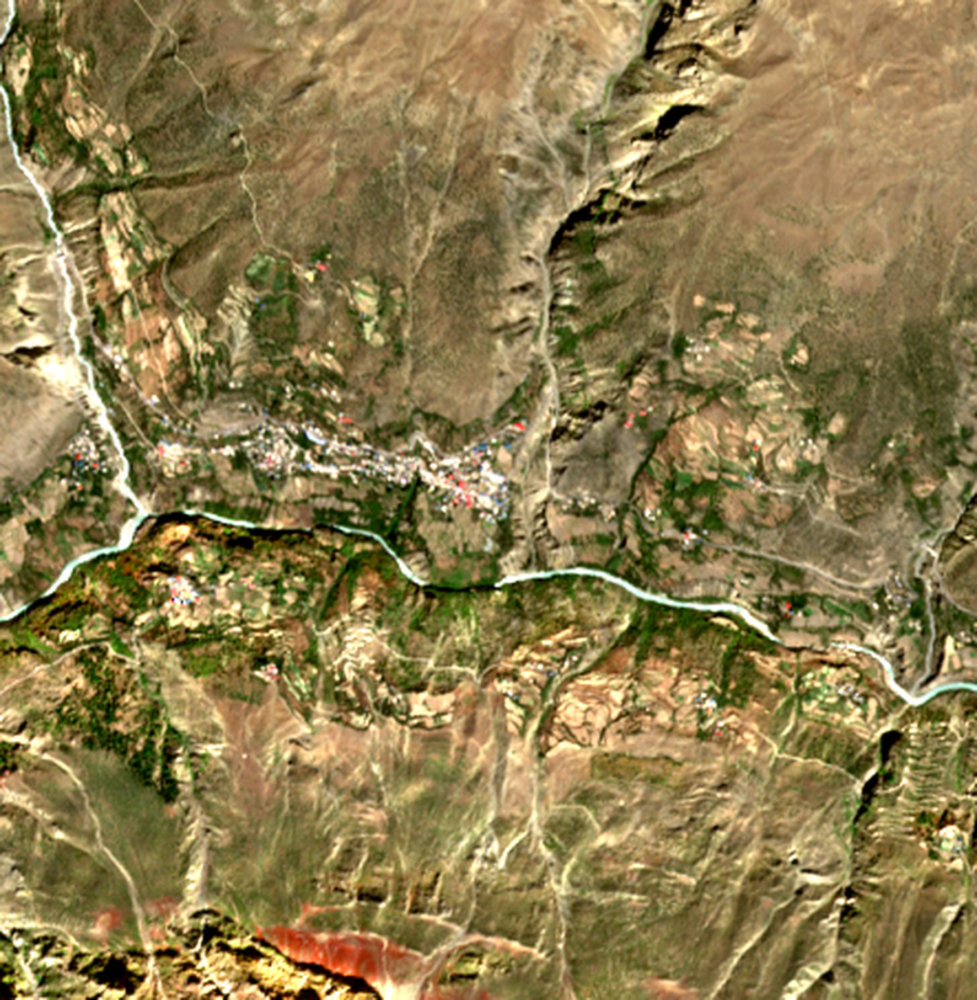

emem moves that identity out of the model into a shared record. One place → one address. One observation → one signed fact. An agent hands another party a token; the token dereferences to exact bytes; the receiver checks those bytes without trusting the sender, the network, or the server that served them.
| token | dereferences to | a match proves |
|---|---|---|
| emem:fact: | exact stored bytes (32-byte BLAKE3) | bytes |
| emem:raster: | signed derivation of an f32 grid | bytes via artifact |
| emem:cube: | signed manifest of rasters in time | bytes via members |
| emem:bundle: | a set of facts (≤ 256) | set · members bytes |
| emem:entity: | a registered identity (16 B) | shared name |
| emem:cell: | nothing — refused by design | address only |
A guard that checks citations treats only the first four as evidence. Treating an entity as a content commitment is the likeliest misuse of the protocol.
A fact is (cell, band, tslot, value, uncertainty, sources, derivation, signer, signed_at), encoded as deterministic CBOR (declaration order, NaN/−0 canonical) and named by BLAKE3 of those bytes. The derivation carries enough to recompute the value offline.
tslot is valid time (days since 1970 for fast bands; 0 for static). signed_at is transaction time. as_of_signed_at replays a key’s full signed history.
An upstream’s definitive no-data becomes an Absence fact — signed, citable, its reason bound by hash. Timeouts and upstream errors return an unsigned skip note instead, so the two stay distinct.
Every attestation at a (cell, band, tslot) key is retained. memory_contradictions returns disagreement per key — scalar spread, 1 − mean cosine for vectors, 1 − mode share for classes — and flags a signer that switched provider or recipe.
/v1/derive resolves every parent token (mislabelled parent → 409, missing → 404), re-runs the op, and promotes the result to deterministic_index only on a match: exact for leaves, ≤ 4 ULP for mean/sum over > 2 parents. It always returns the rule and the measured gap.

A raster is a canonical f32 grid whose hash sits in a signed record (AOI, band, scene, cloud, angles, anchors). A cube is a signed manifest of rasters that states, per member, how far the scene is from the date asked for.
guard/verdict reads a draft, resolves each cited token, and compares the written number with the signed value at the writer’s own precision. Refusals are typed and carry the fix; a refused write returns the exact digest to sign.
RFC 6962 Merkle log over BLAKE3 with signed tree heads, inclusion and consistency proofs. Receipt v2 signs the Merkle proof or an explicit ABSENT marker, so stripping a proof or downgrading the version breaks the signature.
| pre-registered: full context (control) | 72/72 correct · 36/36 agree |
| after a shared compaction summary | 0/72 · 3/36 · p = 0.035 |
| handoff by prose · dense RAG · BM25 · bundle | 2 · 8 · 20 · 20 of 20 |
| 599-turn run: citable answers, bundle vs BM25 | 100% vs 0% |
Fisher one-sided; 0/72 ⇒ 95% upper bound ≈ 4.1%; one host, open models, no independent replication. BM25 ties on short handoffs. The phenomenon is known — Perez et al. ICLR 2025 (telephone game); Laban et al. 2505.06120; “The Deliberative Illusion” 2606.03032; “Lost in Compaction” 2608.11242; ARC 2607.25066 (pointer-based compaction). The contribution is a mechanism that detects drift of cited values.
69 attesters, 37,020 notes, 4,311 addressed to a peer, on at least five model families. A disagreement between two agents is itself a durable, addressable object a third party can fetch and check. 19 claims have been withdrawn — each a signed record beside the claim it retracts.
| per-encoder change calibration — shown impossible by an outside agent (∂²S/∂c∂x = −∂ log L/∂x vanishes on flat fields) | withdrawn |
| headline 1.000 counted empty answers → 0.989 | corrected |
| cell64 cheaper for LLMs than H3 — 12.5 vs 8.5 tokens | refuted |
| handing a model the opaque id — tokenizers cut it identically 0–4% of the time; the descriptor lat,lng@date@band 100% | replaced |
| emem vs peer agent-memory products | not tested |
Record: whitepaper v3 §2–3; counts from the live responder. geo.qa and other Vortx deployments are not independent adoption. Verifiability is not accuracy: a signature says who wrote a thing, never that it is true.
# pip install blake3 cbor2 pynacl python verify_fact.py # bytes → id python verify_ndvi.py # A1 python verify_bitemporal.py # A2 python verify_absence.py # A3 python verify_log.py # A8 python verify_receipt_tamper.py \ receipt_2026-09-29.json # agents: MCP (18 core tools) claude mcp add --transport http \ emem https://emem.dev/mcp # Python: pip install ememdev # node: docker run -p 5051:5051 \ # ghcr.io/vortx-ai/emem:latest
Not claimed. Anything running in orbit (edge signing is simulated: 0.17% of a 40 ms frame). Hardware-attested devices. Read federation. Formal proofs or full conformance vectors. Triple-encoder change consensus (retired). The accuracy of any observation.